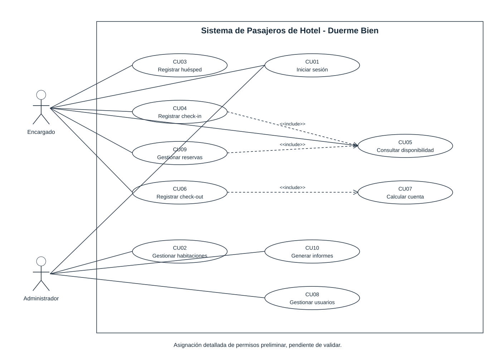
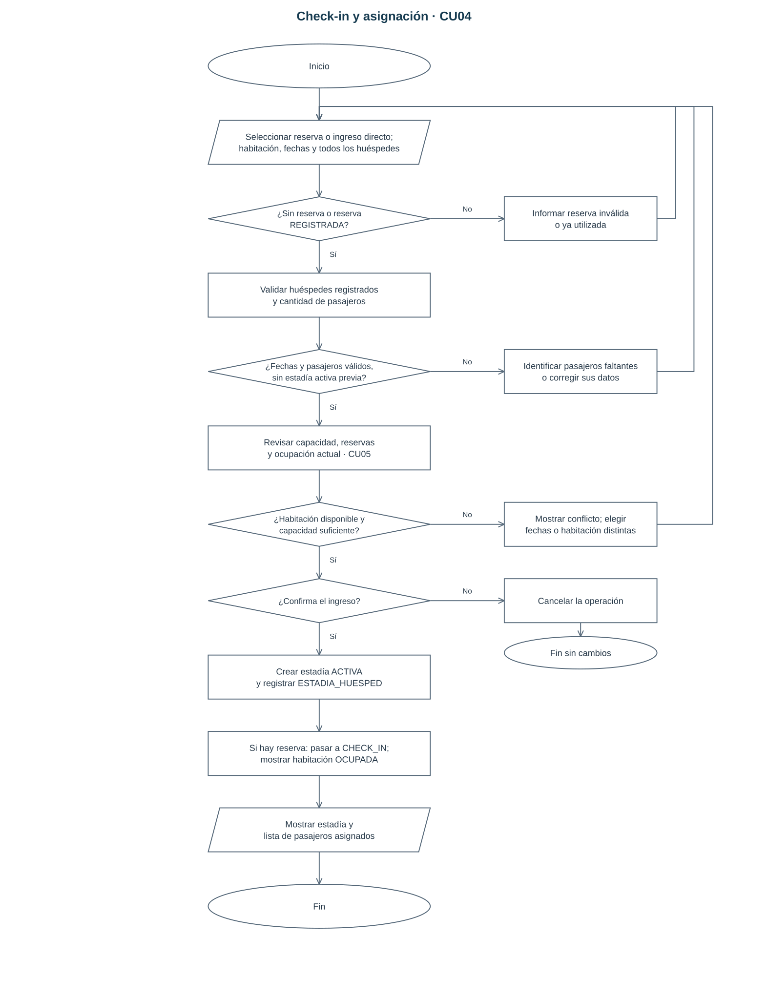
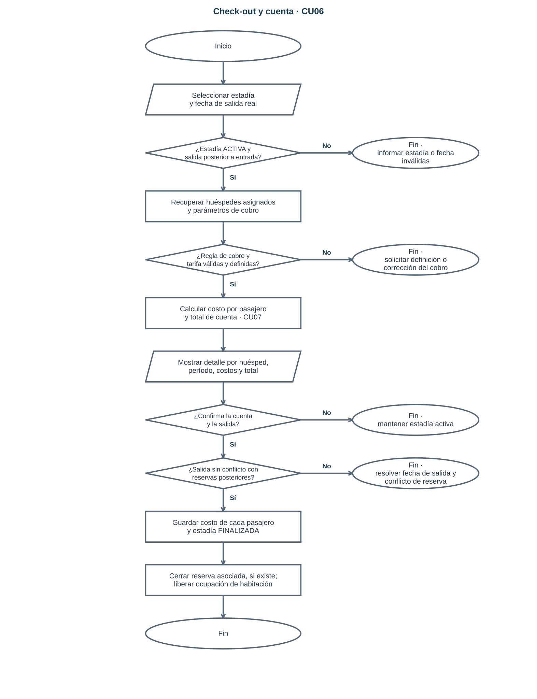
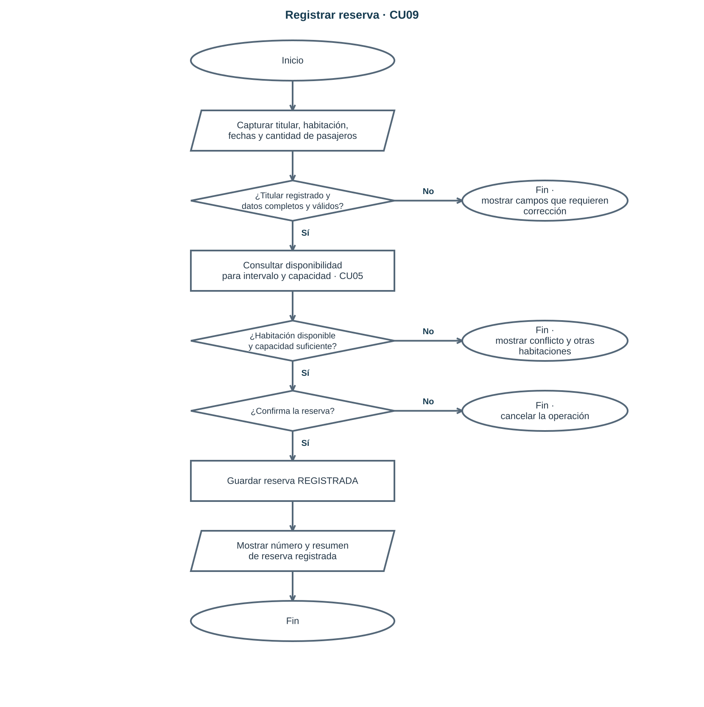
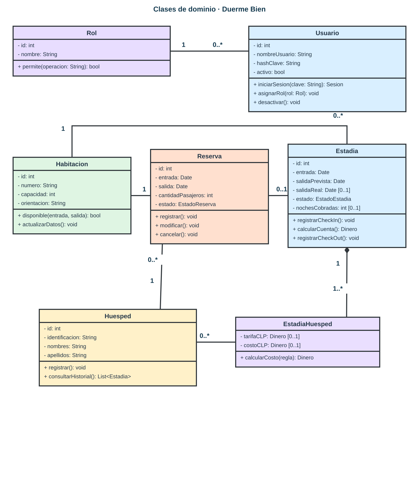
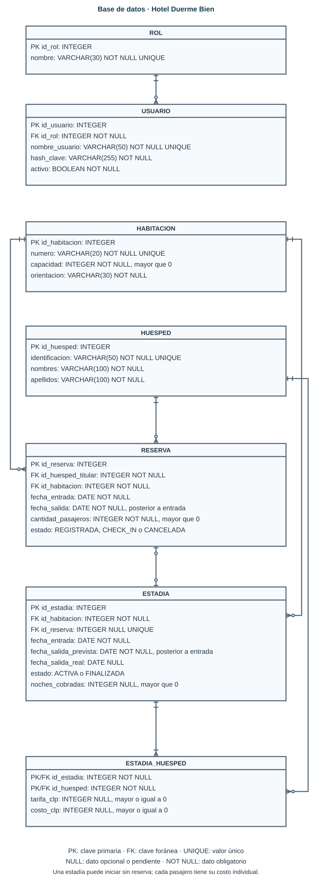

Duerme Bien · Tema 6 · Luis Huenchul
Propuesta de análisis y modelado basada en los 11 archivos recibidos. La rúbrica, la entrevista y la regla de cobro requieren confirmación. Los diagramas se muestran aquí y cuentan con archivos editables en el repositorio.






Habitaciones, huéspedes, reservas, check-in, check-out, usuarios e informes. Los registros de prueba se conservan en este navegador.
Abrir el prototipo funcional en una ventana completa
El botón «Ver wireframe» alterna la vista estructural en escala de grises.
Validar identificación, tarifas, permisos y reglas pendientes.
Recibir plantilla, rúbrica y retroalimentación de Evaluación 1.
Guardar diagramas y mockups en la plataforma acordada.
Sin tareas asignadas.
Informe de requerimientos.
Casos de uso y flujos.
Clases y modelo de datos en 3FN.
Wireframes y maqueta navegable.
Crear y publicar el repositorio GitHub y su página pública.